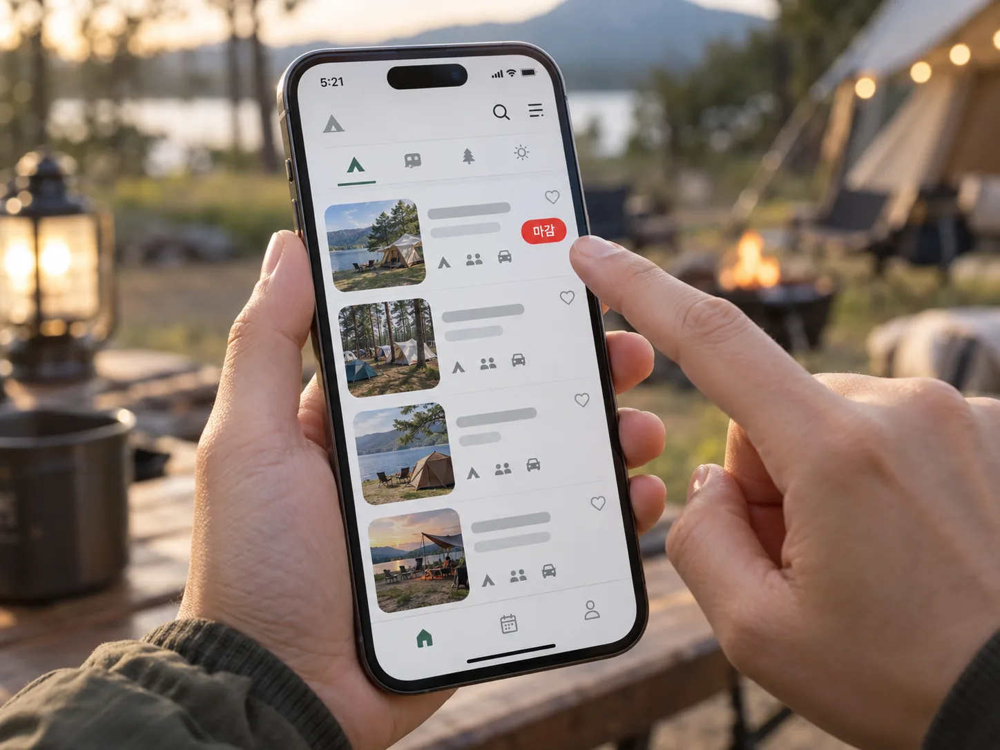
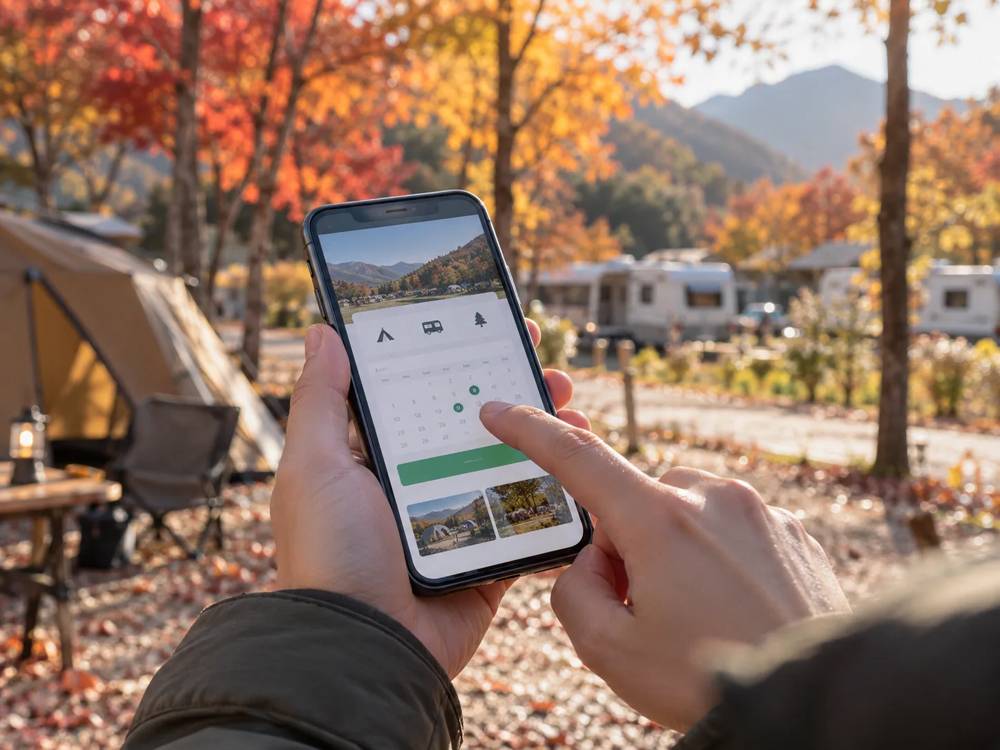
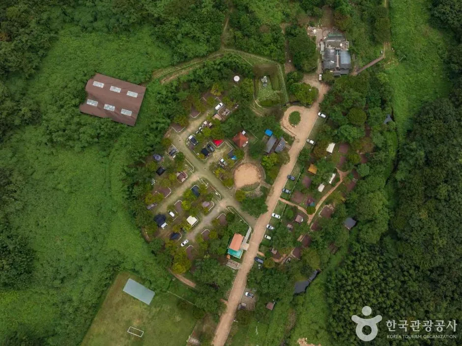
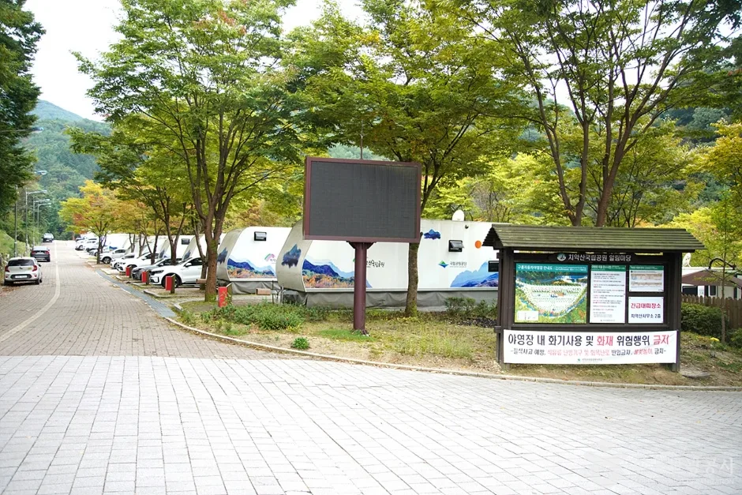
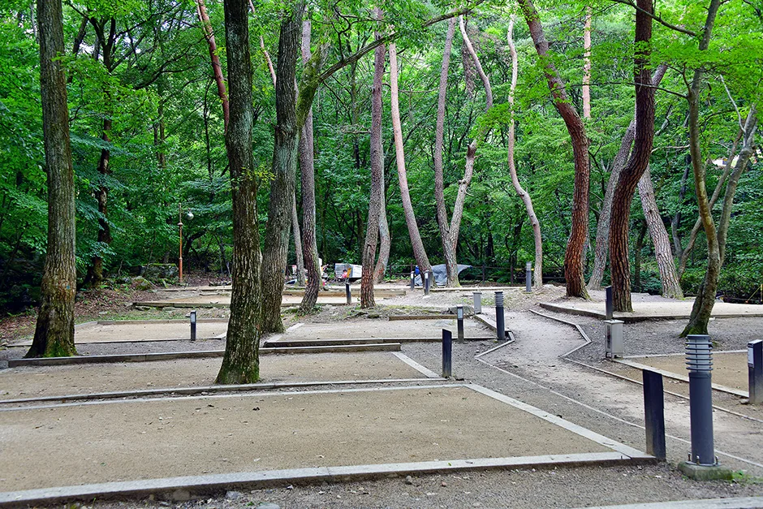
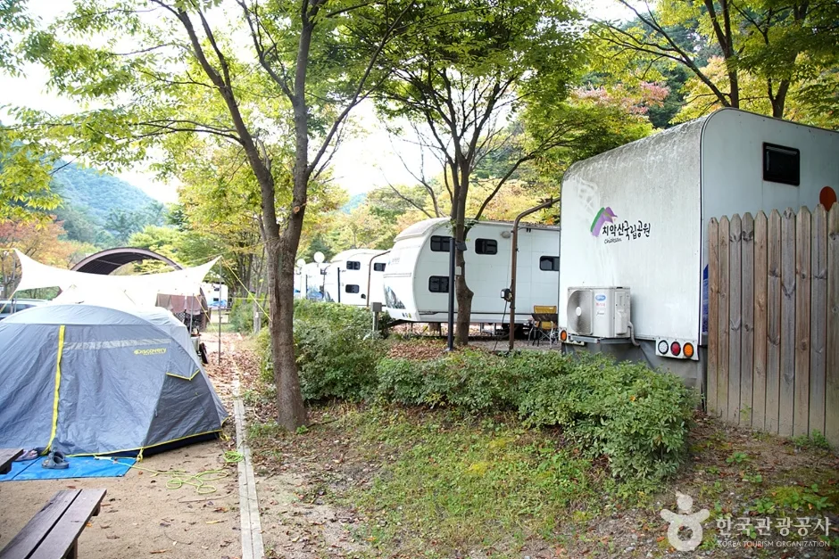
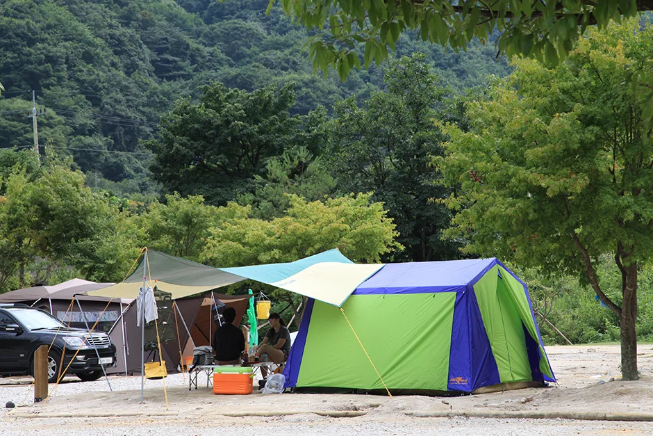

▲ 단풍이 물드는 국립공원 야영장(지리산 달궁자동차야영장)의 가을 — 이런 인기 야영장은 주말마다 자리 경쟁이 벌어지지만, 전국 캠핑장의 평균은 아니다 사진=한국관광공사
"오전 10시 예약 오픈, 노트북 두 대로 접속했는데도 놓쳤다." 가을 단풍철 캠핑 커뮤니티에 흔히 올라오는 후기다. 반면 같은 시기 다른 지역 캠핑장 사장님들은 정반대의 하소연을 한다. "주말인데도 사이트 절반이 비어있다."
둘 다 사실이다. 다만 같은 '캠핑장'을 말하는 게 아니다. 2026년 가을 캠핑·카라반 예약 시장을 실제 공개된 수치로 들여다보면, 소수의 인기 명소에 수요가 몰리는 '예약 전쟁'과 그 외 절대다수 캠핑장의 '조용한 침체'가 동시에 벌어지고 있다.
1. "92.96대 1"… 숫자로 확인된 성수기 경쟁률, 그런데 이건 여름 얘기다
가을 단풍철 캠핑장·카라반 예약 경쟁률을 다룬 공식 통계는 아직 공개되지 않았다. 다만 같은 '자연 속 숙박시설 성수기 추첨'이라는 점에서 참고할 만한 가장 최근 수치는, 산림청 산하 국립자연휴양림이 2026년 여름 성수기를 앞두고 실시한 예약 추첨 결과다.
산림청 집계에 따르면 2026년 여름 성수기 국립자연휴양림 예약 추첨에는 총 137,691건이 접수됐고, 이 중 23,289건만 당첨돼 평균 경쟁률은 5.91대 1을 기록했다. 세부적으로는 숲속의 집 등 객실이 126,896건 신청에 18,442건 당첨(6.88대 1), 야영시설은 10,795건 신청에 4,847건 당첨(2.22대 1)으로 나타나 객실형 숙소 쪽 경쟁이 훨씬 치열했다.

▲ 인기 캠핑장·자연휴양림은 예약 오픈과 동시에 마감되는 경우가 드물지 않다 ⓒ CarPrism (AI 생성 이미지)
특히 눈에 띄는 건 최고 경쟁률이다. 가장 인기가 높았던 객실은 경북 대야산자연휴양림 숲속의 집 601호로, 무려 92.96대 1의 경쟁률을 기록했다. 지역별로 봐도 강원 고성의 진부령자연휴양림이 24.81대 1로 전체 1위, 인천 중구 무의도자연휴양림이 13.57대 1로 뒤를 이었다. 즉 '평균 5.91대 1'이라는 숫자 뒤에는 특정 인기 시설로 신청이 극단적으로 쏠리는 현상이 숨어 있다는 뜻이다.
📍 국립공원 야영장과 산림청 자연휴양림은 다른 기관이다
위 수치는 산림청 소관 '국립자연휴양림' 통계다. 국립공원 오토캠핑장·야영장은 환경부 산하 국립공원공단이 별도로 운영하며, 아래에서 다루는 것처럼 2024년 5월부터 예약 방식 자체가 바뀌어 2026년 현재까지 이어지고 있다. 두 시스템을 혼동하지 않아야 한다.
2. 국립공원 야영장 "광클" 없앤다더니 — 가을 경쟁률은 아직 베일 속
국립공원 야영장 예약은 2024년 5월 1일부터 방식이 완전히 바뀌었고, 이 제도가 2026년 현재까지 그대로 유지되고 있다. 대한민국 정책브리핑에 따르면 그동안 특정 시각에 접속해 선착순으로 자리를 선점하던 방식을 폐지하고, 짝수월 1일~5일에 신청을 받아 2개월 단위로 연 6회 무작위 추첨하는 상시 추첨제로 전면 전환했다. 이투데이 등 언론은 당시 이를 '국립공원 야영장 티켓팅이 사라진다'고 보도했다.

▲ 선착순 '광클' 경쟁은 사라졌지만, 인기 야영장에 신청이 몰리는 구도 자체는 그대로다 ⓒ CarPrism (AI 생성 이미지)

▲ 국립공원 야영장은 산자락 숲속에 자리 잡은 경우가 많다 — 다도해해상국립공원 팔영산자동차야영장 전경 사진=한국관광공사

▲ 치악산국립공원 구룡자동차야영장 — 카라반과 차량이 줄지어 들어선 야영장 입구 풍경 사진=한국관광공사
이 제도는 광클(빠른 클릭) 경쟁 자체를 없애기 위한 조치였지만, 수요와 공급의 불균형이 사라지는 것은 아니다. 인기 야영장에 신청이 몰리면 추첨 경쟁률만 높아질 뿐, 확률적으로 당첨되기 어려운 건 마찬가지다. 다만 이 글을 쓰는 시점 기준으로 국립공원공단이 2026년 가을 시즌(9~11월) 접수분의 구체적인 경쟁률 수치를 별도로 공개한 자료는 확인되지 않는다. 정확한 가을 시즌 경쟁률은 국립공원 예약시스템 알림마당에서 회차별 공지를 직접 확인하는 것이 가장 정확하다.
국립공원 야영장 추첨제 신청 일정과 방법은 예약시스템에서 직접 확인할 수 있다. 국립공원 예약시스템 추첨제 안내 바로가기
3. 그런데 같은 시기, 캠핑장 절반은 문을 닫고 있다
인기 명소의 경쟁률만 보면 캠핑 시장 전체가 뜨거워 보이지만, 산업 전체 통계는 정반대를 가리킨다. 중부일보가 보도한 [캠핑시대의 몰락] 기획 기사에 따르면, 2026년 캠핑장 예약률은 작년과 비교해 60% 내외 수준에 그치는 것으로 나타났다.

▲ 시설을 갖춘 정식 야영장이라도 비수기·비인기 시간대엔 사이트가 텅 비기도 한다(가야산국립공원 치인자동차야영장 자료사진) 사진=한국관광공사
개업·폐업 통계도 침체를 뒷받침한다. 같은 기사에 따르면 전국 신규 캠핑장 개업은 2022년 547개에서 2025년 367개로 30% 이상 줄었고, 2025년 한 해 폐업 신고는 60개소에 달했다. 특히 전국 야영장 4,230곳 중 약 34%(1,470개소)가 몰려 있는 경기도의 상황이 더 심각해, 2025년 전국 폐업 캠핑장의 절반이 경기도에서 나왔다고 전했다. 경기도 내 신규 개업은 2022년 이후 급감한 반면, 폐업 신고와 '급매' 매물은 역대 최대치를 기록 중이라는 것이 중부일보의 분석이다.
한국관광공사 통계를 인용한 다른 보도(땅집고)에서도 흐름은 비슷하다. 2024년 11월~2025년 10월 캠핑장 개업은 371개로 전년 동기(466개) 대비 20.4% 감소했고, 같은 기간 폐업은 61개로 전년 대비 13% 늘었다. 두 기사의 세부 수치(60개 vs 61개, 367개 vs 371개)는 집계 시점·기준에 따라 약간씩 다르지만, '신규 개업은 줄고 폐업은 늘어난다'는 방향성만큼은 일치한다.
| 구분 | 중부일보(2025년 기준) | 땅집고·한국관광공사 인용(2024.11~2025.10) |
|---|---|---|
| 신규 개업 | 2022년 547개 → 2025년 367개(30%↓) | 371개(전년 동기 466개 대비 20.4%↓) |
| 폐업 | 2025년 60개소 | 61개(전년 동기 54개 대비 13%↑) |
| 비고 | 경기도가 전국 폐업의 절반 차지 | 캠핑 이용자는 600만~700만 명으로 추정 |
4. 카라반·캠핑카는 더 극적이다 — 신규 등록 5년 새 80% 넘게 줄었다
차박·카라반 여행의 '하드웨어'라 할 수 있는 캠핑카·트레일러 신규 등록 통계는 시장 축소를 더 선명하게 보여준다. 교통 전문 매체 교통뉴스가 카차트 AI 데이터 리포트를 인용해 보도한 바에 따르면, 캠핑카·트레일러 신규 등록은 코로나19 특수로 정점을 찍었던 2021년 7,300대(캠핑카 3,054대·트레일러 4,246대)에서 2025년 1,361대(캠핑카 818대·트레일러 543대)로 81.4% 급감할 것으로 전망됐다.
세부적으로 보면 캠핑 트레일러는 2021년 4,246대에서 2025년 543대로 87.2%, 캠핑카는 같은 기간 3,054대에서 818대로 73.2% 각각 줄어 트레일러 쪽 감소 폭이 더 컸다. 참고로 코로나19 이전인 2016~2019년 평균 신규 등록 대수는 연 2,780대 수준이었던 점을 감안하면, 2025년 전망치(1,361대)는 팬데믹 이전보다도 절반 아래로 내려간 셈이다.

▲ 카라반·캠핑카 신규 등록 대수는 5년 새 80% 넘게 줄었지만, 이미 보유 중인 차량의 가을 성수기 예약 수요 자체는 여전히 남아 있다(치악산국립공원 구룡자동차야영장) 사진=한국관광공사
이 통계가 의미하는 바는 명확하다. 새로 카라반·캠핑카를 사려는 사람은 확 줄었지만, 이미 차량을 보유한 사람들의 '가을엔 어디로든 떠나고 싶다'는 수요는 그대로 남아 있다. 결국 한정된 인기 캠핑장·오토캠핑존을 놓고 기존 보유자들끼리 경쟁하는 구도가 만들어지고, 이것이 특정 시설의 예약 경쟁률을 계속 높게 유지시키는 배경 중 하나로 볼 수 있다.
5. 왜 '예약 전쟁'과 '폐업 러시'가 동시에 일어날까
겉보기엔 모순인 두 현상이 함께 벌어지는 이유는 '양극화'로 설명된다. 캠핑 산업 트렌드를 다룬 베타뉴스 보도는 국내 캠핑 이용자가 2019년 399만 명에서 2023년 583만 명, 2024년에는 600만~700만 명 수준으로 추정된다고 전하면서도, 이 시기 캠핑 트렌드 자체가 양극화됐다고 짚었다. 헬리녹스·노스피크 같은 프리미엄 브랜드 장비 수요가 눈에 띄게 늘어난 반면, "1세대 캠핑장은 노후화와 트렌드 부적응으로 경쟁력이 약화됐다"는 것이다.
✅ 양극화를 만드는 세 가지 요인
· SNS·커뮤니티 후기 쏠림 — 경치·시설이 좋다고 소문난 소수 캠핑장·야영장에 검색과 예약 시도가 집중
· 1세대 캠핑장의 노후화 — 데크·전기·온수 등 편의시설이 최신 기준에 못 미치는 곳은 예약률 하락
· 보유 차량은 그대로, 신규 유입은 감소 — 카라반·캠핑카 신규 구매는 줄었지만 기존 보유자의 가을 성수기 수요는 유지
· 결과적으로 "인기 30곳은 광클전쟁, 나머지 수천 곳은 한산"한 구조가 굳어지는 중
즉 "가을 캠핑장 예약이 어렵다"는 말과 "캠핑장이 예전만큼 안 된다"는 말은 같은 시장을 다른 단면에서 본 것일 뿐, 둘 다 사실에 가깝다. 문제는 이 사실이 잘 알려지지 않아, 많은 사람이 '캠핑장은 다 예약하기 어렵다'고 오해한 채 인기 명소로만 몰린다는 점이다.
6. 그래서 이번 가을, 예약에 성공하려면
통계가 보여주는 결론은 단순하다. '아무 캠핑장이나 어렵다'가 아니라 '특정 캠핑장만 어렵다'는 것이다. 전략을 바꾸면 가을 단풍철에도 얼마든지 선택지가 있다.

▲ 차를 옆에 세우고 텐트를 치는 오토캠핑 — 지리산국립공원 달궁자동차야영장 사진=한국관광공사
✅ 가을 캠핑·카라반 예약 체크리스트
· 국립자연휴양림·국립공원 야영장은 선착순이 아니라 대부분 추첨제 — 오픈 시간에 매달리기보다 접수 기간(국립공원은 짝수월 1~5일) 안에 신청부터 완료할 것
· 회원가입·로그인·결제수단 등록은 접수 시작 전에 미리 끝내둘 것 — 추첨제라도 신청 자체가 안 되면 의미가 없다
· 인기 명소 1~2순위에 집착하지 말고 대안 후보지를 3~4곳 함께 신청할 것 — 자연휴양림 경쟁률은 시설마다 최대 수십 배 차이가 난다
· 평일·비인기 캠핑장은 여전히 여유가 있는 편이다 — 개업·폐업 통계가 보여주듯 전국 캠핑장 상당수는 주말에도 자리가 남는다
· 민간 오토캠핑장·카라반 대여는 고캠핑, 캠핏 등 통합 예약 플랫폼에서 실시간 잔여석을 함께 비교해볼 것
전국 정식 등록 캠핑장의 실시간 예약 현황은 한국관광공사가 운영하는 고캠핑에서 확인할 수 있다. 고캠핑 홈페이지 바로가기
7. 요약
2026년 가을 캠핑·카라반 예약 시장은 '경쟁률이 전반적으로 높아졌다'가 아니라 '쏠림이 심해졌다'로 요약된다. 산림청 국립자연휴양림의 2026년 여름 성수기 예약 추첨 평균 경쟁률은 5.91대 1이었지만 최고 인기 시설은 92.96대 1에 달했다. 국립공원 야영장은 2024년 5월부터 추첨제로 전환돼 2026년 현재도 유지되고 있지만, 가을 시즌 구체적 경쟁률은 아직 공식 공개되지 않았다.
반면 캠핑장 산업 전체는 위축되는 추세다. 전국 신규 캠핑장 개업은 감소하고 폐업은 늘었으며, 캠핑카·트레일러 신규 등록은 2021년 대비 2025년 81.4% 급감할 전망이다. 인기 명소로의 극심한 쏠림과 절대다수 캠핑장의 침체가 동시에 나타나는 양극화가 이 시장의 진짜 모습이다.
따라서 가을 캠핑을 계획한다면 소수의 유명 명소에만 매달리기보다 추첨제 신청 기간을 정확히 지키고, 대안 캠핑장을 함께 신청하며, 평일이나 상대적으로 덜 알려진 캠핑장을 적극적으로 고려하는 편이 현실적인 전략이다.